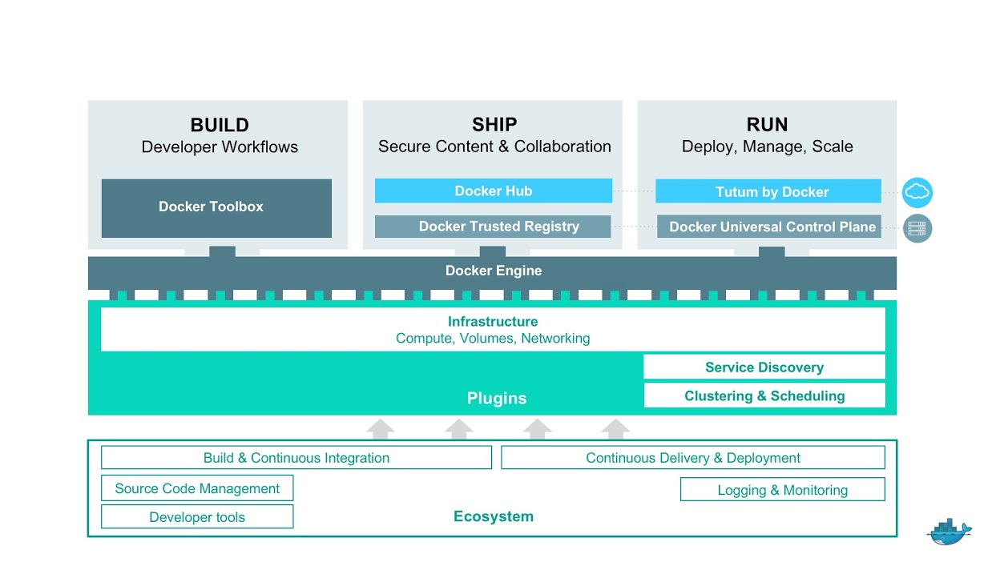

				<section data-background="#173432">
                	<section>
					<h2><span class="accent_text_color">Mini-lecture:</span> Docker Architecture and Components</h2>
					</section>
					
					<section>
                    <h3 class="accent_text_color">What are the components of Docker?</h3>
  
                    
                    <div style="width: 100%; overflow: hidden;">
                    <div class="third_container_one"><div class="table_cell">Engine</div></div>
                    <div class="third_container_one"><div class="table_cell">Machine</div></div>
                    <div class="third_container_one"><div class="table_cell">Swarm</div></div>
                    </div><div style="width: 100%; overflow: hidden;">
                    <div class="third_container_one"><div class="table_cell">Compose</div></div>
                    <div class="third_container_one"><div class="table_cell">Hub/DTR</div></div>
                    <div class="third_container_one"><div class="table_cell">Cloud/UCP</div></div>
                    </div>
                    
                    <aside class="notes">speaker notes:  Speak at high level to each component</aside>
                    </section>
                    
                    <section>
                    <h3 class="accent_text_color">How do the components fit together?</h3>
                    <br>
					
                    <aside class="notes">Speaker notes: 
					<ul>
					<li>Build: Enable developers to build Dockerized distributed apps.</li>  
					<li>Docker Toolbox is an installer for Mac and PC to set up a local development environment.</li>  
					<li>Applications built locally can be deployed and run in production without changes to the code.</li>  
					<li>Developers define the application behavior and needs from the infrastructure.</li>  
					<li>SHIP: secure content and collaboration between dev and IT ops.</li>  
					<li>Create and manage a library of base images in the cloud or on-premise (VPC).</li>  
					<li>Secure content with digital signatures and content integrity with image scanning. </li> 
					<li>Control access and permissions by user or organizations.</li>  
					<li>Web UI to search and browse repos, manage users and settings.</li> 
					<li>Integrate to CI CD systems to automate workflows. </li> 
					<li>RUN: Deploy and manage Dockerized distributed apps anywhere. </li>
					<li>Management console in the cloud or on-premise.</li>  
					<li>Manage across hybrid infrastructure, some nodes on AWS, some on Azure, some in on premise data center</li>  
					<li>GUI.</li>  
					<li>Deploy and manage containers and Compose apps.</li>  
					<li>Deploy and manage clusters of Engines (Swarm)  </li>
					<li>Integrated management of images, network, and volumes.</li>  
					<li>Registry integration to Hub or Trusted Registry.  </li>
					<li>System metrics like monitoring, logs, and service history.</li>
					</aside>
                    </section>
				</section>